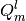
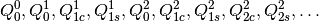

Interface to GDMA Distributed Multipole Analysis by A. J. Stone, gdma()¶
Code author: Anthony J. Stone, Andrew C. Simmonett
Section author: Andrew C. Simmonett
Module: Keywords, PSI Variables, PCMSolver
Input ~~~
The distributed multipole analysis (DMA) technique, developed by Anthony J.
Stone and implemented by him into the GDMA package, is available in Psi4.
The current implementation simply embeds Stone’s GDMA code into the main
executable, and generates the appropriate input files automatically. The
program takes as input a data file, and a Gaussian formatted checkpoint (see
Section FCHK) file. The simplest usage of the GDMA code is
demonstrated below, along with a listing of the options supported; these
options correspond to the options described in the
GDMA manual.
If more advanced usage is desired, which is not is permitted by the options
listed below, the user may provide their own data file containing keywords to
control the GDMA code. Simply place the data file in the directory Psi4
is called from, and provide the file name as the datafile argument to the
gdma() routine. For example, if GDMA data file is called
control.dma, the GDMA code is called as follows:
grad, wfn = gradient('mp2', return_wfn=True)
gdma(wfn, datafile='control.dma')
An FCHK file will be generated for the GDMA code to read; this file will have the prefix given by WRITER_FILE_LABEL (if set), or else by the name of the output file plus the name of the current molecule, and the suffix will be ‘.fchk’. This FCHK file name should be passed to the ‘File’ keyword in the DGMA data file, to ensure that the GDMA code reads the correct wavefunction information.
After running, two matrices of results can be accessed:
dma_results = get_array_variable('DMA DISTRIBUTED MULTIPOLES')
tot_results = get_array_variable('DMA TOTAL MULTIPOLES')
The first contains distributed multipoles, in units given by GDMA_MULTIPOLE_UNITS, with the row index corresponding to the site and the column index referencing the multipole component. Both indices are zero based, and the  components of the multipoles are ordered as  The second matrix returned has a single row, whose columns are the total multipoles, translated to GDMA_ORIGIN, and summed.
-
gdma(wfn)[source]¶ Function to use wavefunction information in wfn and, if specified, additional commands in filename to run GDMA analysis.
New in version 0.6.
Returns: None
Parameters: - wfn (Wavefunction) – set of molecule, basis, orbitals from which to generate DMA analysis
- datafile (string) – optional control file (see GDMA manual) to peform more complicated DMA analyses. If this option is used, the File keyword must be set to read a filename.fchk, where filename is provided by WRITER_FILE_LABEL .
Examples: >>> # [1] DMA analysis from MP2 wavefunction. N.B. gradient must be requested to generate MP2 density. >>> grad, wfn = gradient('mp2', return_wfn=True) >>> gdma(wfn)
Options¶
GDMA_LIMIT¶
The order of multipole expansion on each site. Currently limited to the same order for all sites; for more advanced usage a user-provided GDMA data file should be provided.
- Type: integer
- Default: 2
GDMA_ORIGIN¶
The origin (in Angstrom, expressed as an [x, y, z] array) about which the total multipoles will be computed during DMA. Useful for determining single site expansions at an arbitrary point.
- Type: array
- Default: No Default
GDMA_MULTIPOLE_UNITS¶
Whether to print DMA results in atomic units or SI.
- Type: string
- Possible Values: AU
- Default: AU SI
GDMA_RADIUS¶
The radii to be used, overriding the defaults. Specified as an array [ n1, r1, n2, r2, ... ] where n1,n2,n3... are atom type strings and r1,r2,r3 are radii in Angstrom.
- Type: array
- Default: No Default
GDMA_SWITCH¶
The value to switch between the older standard DMA and the new grid-based approach. Pairs of primitives whose exponents sum is above this value will be treated using standard DMA. Set to 0 to force all pairs to be treated with standard DMA.
- Type: double
- Default: 4.0